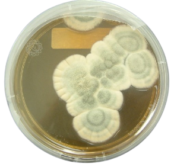
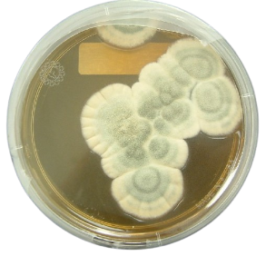

Chemical Structure(Phytochemicals)

On a chemical level, phytomedicine has been tested to improve antibiotics(in terms of side-effects) and other microbial issues. One example of a chemical with anti-inflammatory, analgesic, and antioxident properties is Eugenol, alongside other traits that follow phytochemicals. Usages range from; elimination of cancer, clinical microbes, and type 2 diabetes(chemical structures can be found in herbs - ex: clover, eucalyptus, etc) spanning from essential oils to cephalosporins. The way that these anti-bacterial effects are acheived, is through a long process on a cell level. In multiple cases, specific plants can often disrupt a bacteria's cell membrane -> which can change the permaebility of the cell -> hence; causing organelle leakage and extermination. Plant extracts and the chemicals that reside within have the potential for better antimicrobial elimination, as well as the reduction of harmful side-effects.
| Phytochemical | Sources | Active Sites | Health Benefits |
|---|---|---|---|
| α-carotene | Mango, pear, peach, pumpkin, butternut squash, green bean, okra, avocado, chard, collard greens, tangerine, banana | Pulp of mango, tangerine, avocado, butternut squash, and pumpkin; the green part of okra, chard, collard greens | Regulates gene transcription, protects against lung and prostate cancer, good for eye health |
| β-carotene | Red pepper, carrot, spinach, peaches, brussel sprout, grapefruit, sour cherries, papaya, mango, romaine lettuce | Green parts of plants, flowers, roots, and stems of plants; pulp of mango, grapefruit, papaya, etc. | Enhancement of gap junction communication, enhances immunity |
| Lutein | Asparagus, spinach, kale, green beans, orange pepper, lettuce, broccoli, parsley, pistachio nuts | Leaves of spinach, lettuce, parsley; flower part of broccoli; essential oil of pepper; middle lamella of nuts | Improves immunity, good for eye health |
| Lycopene | Tomato, sweet potato, pink grapefruit, pink guava, watermelon, apricot, papaya, rosehip | Skin and pulp of tomato, grapefruit, watermelon, apricot, guava | Improves eyesight, reduces pain, and strengthens bones |
| Xanthophylls | Pumpkin, papaya, pepper, mushroom | Young leaves of papaya, pumpkin; essential oil of pepper | Antioxidant properties, boosts eye health and blood flow |
| Cryptoxanthin | Apricot, papaya, peach, cashew apples, seabuckthorn, mandarin, tangerine, lemon | Skin and pulp of cashew apple and citrus fruits | Maintains pulmonary health, prevents arthritis and inflammation; improves immune response |
| Fucoxanthin | Brown seaweeds, Bacillariophyta, Chromophyta, Macroalgae, Microalgae | Chloroplasts of brown seaweeds | Antioxidant, anti-inflammatory, antihypertensive, anticancerous, antidiabetic, antiobesity and radioprotective properties |
Antibiotic Resistance
Resistance developed from bacterial exposure has inevitability caused controversy in the field of medicine, and to patients that suspect risk. In this matter, phytomedicine holds an advantage; the tendency to target both gram negative and positive bacteria(due to certain cell attributes), as well as the range of targetting that natural compounds contain.